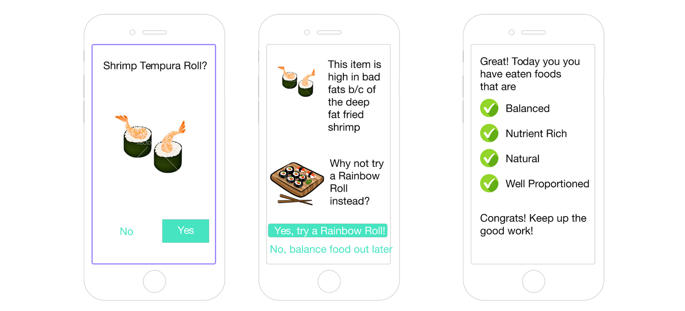
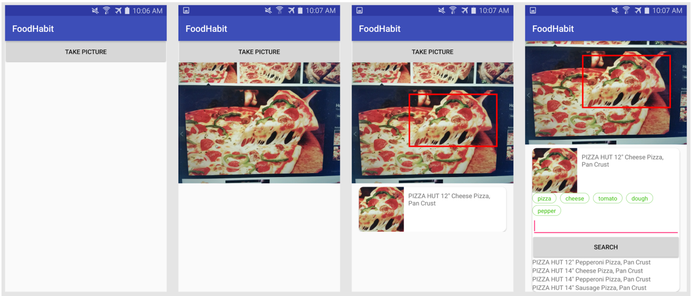

We conducted numerous experiments to hone in product market fit for a smart food tracking app.
Wizard of Oz
For one week, we pretended to be a smart chatbot using Facebook Messenger as the host. A few user testers were asked to take pictures of their food and send it to the bot. In the background, we worked as quickly as possible to analyze the food and provide short feedback on how users were doing. Food was manually added to MyFitnessPal and quantitative data was collected for the user to see. At the end of this experiment, we also interviewed users about their thoughts on the experience.
User interviews
Through a series of iterations, we conducted dozens of interviews. In these interviews, we went from general questions about lifestyle and diet to specific questions about food logging and our product. From this, we learned how people interact with diet tracking, such as those for specific diet restrictions and those who need to measure food with utensils before learning to eyeball portion sizes.
UI prototyping
To better understand the specifics of our concept and to gauge additional feedback from users, we created low-mid fidelity prototypes on interactions with our apps. Some feedback included questions on how the app could detect portion size, how individual foods could be selected, or how to modify default entries to be more specific. We also learned more about which environments people would use this feature in, and how people react to food recommendations in the context of when they eat.

Technical prototype
A significant portion of time was dedicated to developing a functional prototype. One of the main obstacles we identified for the viability of our business was being able to build a capable AI for identifying food items and providing useful guidance and feedback. To take a stab at this task, we built a basic Android app that utilizes Clarifai’s API to recognize food.
Our prototype was able to recognize specific food items and get nutritional info from the USDA database. Although unstable, it was able to grab nutrition for basic food items. We planned to supplement poor behavior with additional user input. Code for this prototype can be found at github.com/foodhabit

Technical exploration
Additionally, I pursued food image recognition technology with my computational robotics team (w/ Jonah Spear and Judy Xu). In this phase, we were able to explore several key papers on food computer vision, such as those that built deep convolutional neural nets and classified complex Japanese foods. We were able to build our own food classifier, which can identify (out of 101 basic food categories) 68% of the time on the first guess for a given food item. Although comparable to the field, add more food groups would lower this accuracy, and it’s a long way from being useful for a user.
BETA challenge
Although very early stage, we decided to apply to the BETA challenge. Although we did not make semi-finals, the process did gear us up for our first slide deck, giving us valuable experience for future fundraising.
Learnings
Do more user feedback before technical prototype. After recognizing technical performance as the biggest challenge for the business, we invested several weeks in development. After this phase, we found new competitors that emerged since the start of our project. Since they were more feature complete, this made our prototype much less useful, and we decided to test our concept with their features instead. What we discovered from users was that photo logging would only be applicable 1/3rd of the time (before starting to eat), and although it was an improvement, it was not anything game changing. If we made mocks of our prototype to test what the market wanted first, we may have saved those weeks spent on development for another project.
Continually follow competitors | In retrospect, we also should have kept a pulse on what competitors were doing throughout our work. In the two months we dedicated to this project, several strong players emerged such as BiteSnap and Lose it, small and big food tracking companies who are taking advantage of today’s more powerful image recognition algorithms. Doing so would have allowed us to consider our positioning earlier and test more frequently.
Future
Because of the quickly emerging space, especially from big players such as Lose It!, as well as weak engagement from users for this product as something game changing, we decided to stop our pursuit of this concept and try another idea that aligns with our team values.
References
- everydayhealth.com/news/are-we-fat-think/
- science.time.com/2013/12/16/the-triple-whopper-environmental-impact-of-global-meat-production/
- cowspiracy.com/facts/
This write-up was done by David Zhu.